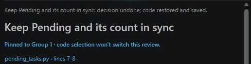
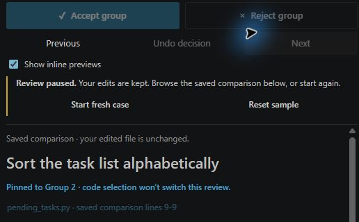

Beta System
We built on the five changes described in our Alpha deliverable, then refined the feedback and recovery steps found during the walkthrough. The comparisons below show what we kept and what changed in Beta.
Design Evolution
We used the Alpha Design Evolution as the starting point. The review identified three remaining problems: Undo could change a different group without showing it, old messages stayed visible, and manual-edit recovery was hard to find.
1. Clearer code comparisons
Alpha. We introduced short Replacement labels, highlighted groups, full hover comparisons and a switch for inline previews.
Beta. We kept those views and allowed the saved comparison to remain browsable after a manual edit. The panel labels its saved line positions and disables the source jump while they may differ from the edited file.
Rationale. Pausing code changes should still leave users able to inspect the comparison. Labelling the saved view keeps it separate from their newer edits.
2. Keep review controls together
Alpha. We put review and navigation buttons at the top and made Pin's state visible.
Beta. Undo now returns to the affected group and highlights its code, including when the panel is pinned. We also added Start fresh case and Reset sample beside the pause message, keeping confirmation before reset.
Rationale. The walkthrough showed that Undo worked but left its result elsewhere, while recovery required finding a command. These changes put the result and the next action within reach.
3. Explain the purpose and effect
Alpha. We combined Change & purpose, highlighted Effect, and kept assumptions nearby with optional examples.
Beta. We retained this explanation layout and corrected the feedback above it. Decision messages name the group, and messages clear when users change groups or resolve a manual edit.
Rationale. An old Accepted message or edit warning could conflict with the explanation being read. Keeping feedback in context made the panel's state clearer without adding more explanation sections.
4. Review related edits together
Alpha. The filter and counter formed one decision, while sorting remained independent.
Beta. We preserved that grouping. Undo now remembers which group the last decision belonged to and restores both its state and the review focus. The filter and counter still reverse together.
Rationale. Users need to see the whole repair when revisiting a decision. We improved recovery around the existing groups without introducing separate choices that could leave the filter and counter inconsistent.
5. Show what was kept
Alpha. We added separate accepted, rejected and pending counts, with labels and symbols alongside colour.
Beta. We kept these counts and made the nearby action messages consistent with them. A fresh case starts with no decisions, while the previous edited file stays open.
Rationale. Counts and messages should tell the same story. The revision helps users track the current review and start again without losing their own work.
Prototype Implementation
AITrace runs as a VS Code extension with the source file and review panel beside each other. The Pending case still contains two groups: the filter and counter together, and sorting separately. Accept, Reject and Undo update and save the sample file.
In Beta, Undo opens the group it changed and names it in the feedback. During a manual-edit pause, users can browse the saved comparison while file-changing review actions stay disabled. Start fresh case opens a new copy of the same sample; Reset sample keeps its confirmation step.
The build works offline with prepared samples, groups and explanations.


Prototype Revisions
Our project proposal focuses on helping users locate AI code changes, understand their purpose and effects, and choose what to keep. The beta builds on the alpha's group review with clearer feedback and easier recovery. We reviewed group decisions, navigation, Undo, Pin and manual edits. The table below connects the issues we found to the revisions we made.
| Issue identified | Revision implemented | Usability benefit |
|---|---|---|
| Undo restored Group 1 while Group 2 remained open. | Undo selects and highlights the affected group and names it in the message. | Users can check the result without searching elsewhere. |
| Accepted messages and edit warnings stayed visible after their context changed. | Feedback names its group and clears when it no longer applies. | The message matches the current review state. |
| Paused navigation raised an error and recovery required a Command Palette command. | Read-only comparison browsing stays available, with direct fresh-case and confirmed reset actions. | Users can inspect the changes and recover while preserving their edits. |
We checked these revisions by repeating the same actions. Undo brought the affected group back into view, browsing saved comparisons left manual edits unchanged, and Start fresh case kept the edited file open. These changes help users check what happened and decide how to continue without losing their work.
User Manual
The updated guide covers installation and the full review flow, including the Beta recovery controls.
Open Beta user manual (PDF) · Download AITrace Beta (.vsix)
User Manual Modifications
We kept the installation, group review, hover, Pin and export instructions from the Alpha guide. We updated the Undo explanation and screenshots, then added a page showing paused review, saved line positions, Start fresh case and Reset sample. The guide explains which option preserves edits and which clears them after confirmation.
Project Reflection
Our starting point was students using AI to build a task-list application. They could make progress with generated code while still struggling to find where a change belonged or explain what it did. As the project developed, we narrowed the problem to reviewing a particular edit within a program the student broadly understood. This became the basis of our Structural Reviewer persona and the decision to keep code and explanation together.
The paper prototypes let us compare popup and sidebar explanations. Both participants preferred the popup approach. In VS Code, we combined native hover with a persistent panel for longer explanations and controls. The Alpha then brought related edits into one decision, made their effects more visible, and added clearer review counts. Each stage helped us make the review easier to follow within an interface we could actually build.
Our usability goals covered visibility, learning, manageability, review efficiency and satisfaction. Feedback showed that finding an explanation and understanding it were different tasks: navigation could be quick while checking the code still took much longer. We kept navigation time separate from reading and reasoning, and paid attention to how users explained a change and whether they found the explanation useful. Clicking Accept alone did not establish understanding.
This walkthrough added another part of the problem. Even when the main review worked, an unclear Undo target or an old warning could make the next step harder to judge. We revised Beta around visible consequences and recovery, so users could check what happened, preserve their work and revisit a decision. That connects the design to the course aim of enhancing people: supporting their judgment and control while they work with generated code.
The prepared cases gave us a manageable way to explore these interactions. Larger projects and unfamiliar code remained outside this evaluation. We identified larger projects as the next setting for checking both usability and understanding.